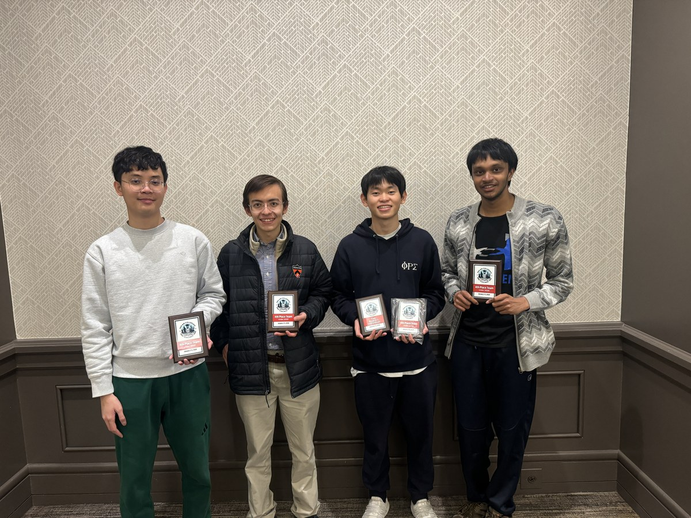

Tournaments & Meetings
Events
Upcoming Events
Stay tuned on the Chess Club listserv to sign up for tournaments & events!
Join the ListservClub Announcements
Weekly meetings Friday 7:00 PM at Campus Club.
Past Events — 2025–2026

2026 Pan-American Intercollegiate Championship
Four students represented Princeton at the Pan-American Intercollegiate Championship. Steve Ta '28, William Aepli '26, Merric Hu '28, and Rohan Kumar '26 competed and brought home trophies. Congratulations to the team!
Past Events — 2024–2025
Princeton Open Blitz
To end the school year, three students attended the local Princeton Open Blitz. Merric Hu '28 came in sole 2nd place, finishing half a point behind a strong FIDE Master. Congratulations!

2025 Inter-Ivy Chess Championship
Princeton University sent three teams to the Ivy League chess tournament! In the Championship Division, Princeton Team A came in 5th place, with the highest tiebreaks of anyone in the tournament. In the Reserve Division, Princeton Team B and Princeton Team C tied for 3rd place. Congratulations to the teams:
Team A: Merric Hu '28, William Aepli '26, Crystal Deng '26, and Kyle Li '25
Team B: Cael Province '28, Rohan Kumar '26, Ashwin Hebbar 'GS, and Philip Wang '25
Team C: Steve Ta '28, Alexander Ding '26, Quinn Blumenthal '28, and Malcom Tafadzwa Dzimiri '28

2025 Pan-American Intercollegiate Championship
With the support of our sponsors, four students represented Princeton at the National Championship: Kyle Li '25, Rohan Kumar '26, Philip Wang '25, and Alexander Tao '25. The team came 9th place. Kumar had an incredible 5/6 performance, while Wang scored 4.5/6. This is one of our favorite events of the year!
55th Annual National Chess Congress
The National Chess Congress was a successful endeavor for Princeton's chess club. William Aepli '26 tied for 3rd place in Under 2200, Philip Wang '25 tied for 6th in Under 1800, Alexander Ding '26 tied for 1st in Under 1600, Mujtuba Yousufi '25 tied for 8th in Under 1600, and William Aepli '26 tied for 4th in Open Blitz. Thank you to our sponsors, and to the players who joined us for Thanksgiving Break!
28th Annual Eastern Chess Congress
A large group of Princeton Chess Club members attended the Eastern Chess Congress. Hammad Farooqi '27 tied for 6th in Under 1700, Mujtuba Yousufi '25 tied for 1st in Under 1500, and Alexander Tao '25 and Steve Ta '25 tied for 3rd in Under 1500. Good job to all Princeton students who joined us!
Pennsylvania State Action Championship (East)
The Princeton University chess team kicked off the year with a fantastic result. William Aepli '26 tied for 2nd in the Open section, Steve Ta '28 won the Under 1600 section, and Alexander Tao '25 won the Under 1400. Combined, Princeton won the trophy for top school! We loved this team tournament!
Past Events — 2023–2024

2024 Pan-American Intercollegiate Championship
To kick off the new year, a team of four represented Princeton at the National Championship: William Aepli '26, Garner Thompson '24, Ashwin Hebbar 'GS, and Alexander Tao '25. The team had a great performance, with Thompson and Tao earning 4.5/6 points, and Aepli earning 4/6. Thank you to our sponsors for making this trip possible!
54th Annual National Chess Congress
A small group of Princeton students attended the National Chess Congress. Alexander Tao '25 tied for 1st in Under 1400, Alexander Ding '26 tied for 3rd in Under 1400, and Hammad Farooqi '27 tied for 3rd in Under 1200. Congrats to all!
27th Annual Eastern Chess Congress
A large contingent of Princeton students attended. Crystal Deng '26 tied for 5th in Under 2100, William Aepli '26 tied for 1st in Under 1900, John Ahona '26 and Ashwin Hebbar 'GS tied for 3rd in Under 1700, Alexander Ding '26 won sole 1st in Under 1500, and Mujtuba Yousufi '25 and Alexander Tao '25 tied for 2nd in Under 1500. Crystal Deng '26 and William Aepli '26 took sole 1st for Top Male-Female team, and Aepli tied with GM Fidel Corrales Jimenez for 1st in the blitz tournament. Thank you to our sponsors!
Past Events — 2022–2023

5th Ivy League Chess Challenge
The Princeton Chess Club competed in the first in-person Ivy League Chess Challenge since the pandemic, hosted by the University of Toronto Chess Club at their historic Hart House. The team placed 2nd overall, beating schools like Harvard and the University of Waterloo. IM Daniel Gurevich GS won Top Board 2, and GM Andrew Tang '23 placed first in the Ivy League Blitz tournament. Congratulations to our team!
Thank you to our donors for supporting this trip: Susquehanna International Group, Jane Street, and Citadel. Additional thanks to the University of Toronto Chess Club for hosting our players!


2023 Pan-American Intercollegiate Chess Tournament
Thanks to our generous donors, Princeton sent 2 teams (A-team and B-team) to the Pan-American Intercollegiate Chess tournament! A-team tied for 7th overall, placing among the top non-scholarship teams (and most importantly, we #beatHarvard). GM Andrew Tang '23 placed 1st in the Seattle New Years Blitz Chess Tournament! Congrats to all of our players!
Thank you to our generous donors: Susquehanna International Group, Jane Street, and Citadel.
National Chess Congress 2022
The Princeton Chess Team spent their Thanksgiving Break representing the Tigers at the National Chess Congress in Philadelphia. Another strong showing by our team! Go Tigers!
Thank you to our generous donors: Susquehanna International Group, Jane Street, and Citadel.
Eastern Chess Congress 2022
Our team stayed local for the Eastern Chess Congress, with 11 players representing Princeton. The Tigers had an incredible tournament, with GM (and Chess Club President) Andrew Tang '23 tying for 1st Place in the Open Section and Will Aepli '26 tying for 1st Place in the U1900 Section! Congratulations to all of our players!